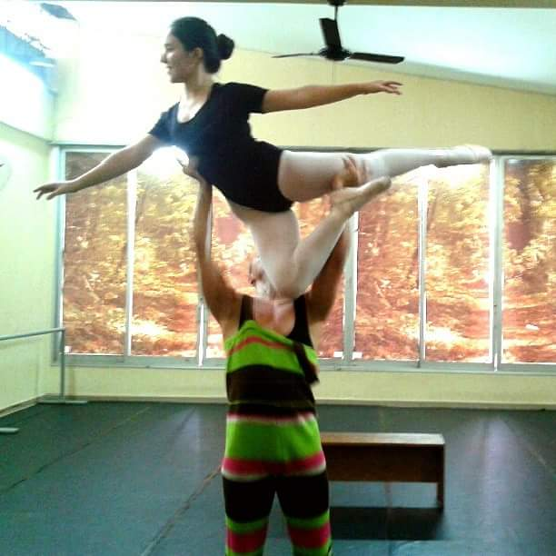
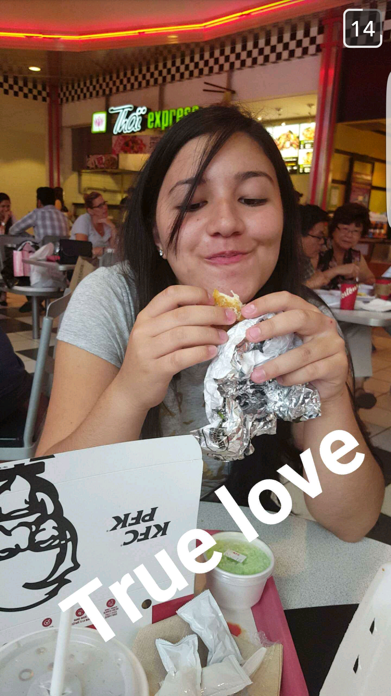

Home Hobbies Vida Acadêmica Tania Sanai Shimabukuro - HobbiesTania possui poucos hobbies, mas eles são muito especiais pra ela.  Ela foi, aos 7 anos, fazer aulas de ballet na Divisão de Ensino às Artes da Prefeitura Municipal de Bauru. Parou de frequentar as aulas de ballet aos 16 anos, devido a falta de tempo. Entretanto, aos 10 anos ela começou a dançar jazz também, modalidade que está presente até hoje na sua vida. 
Seu outro hobby é comer, adora todos os tipos de comida, mas frango é seu ponto fraco.  Voltar ao topo da página |